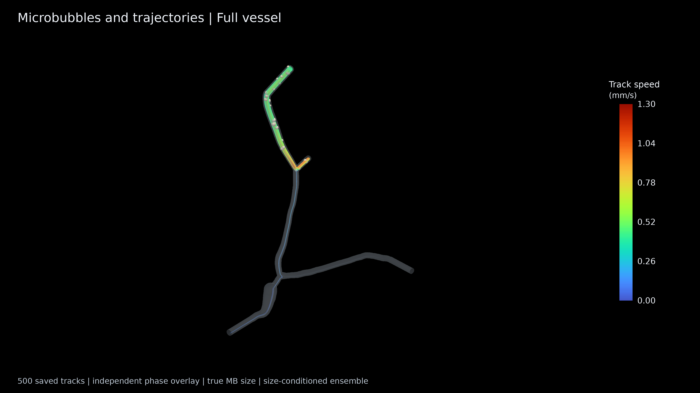
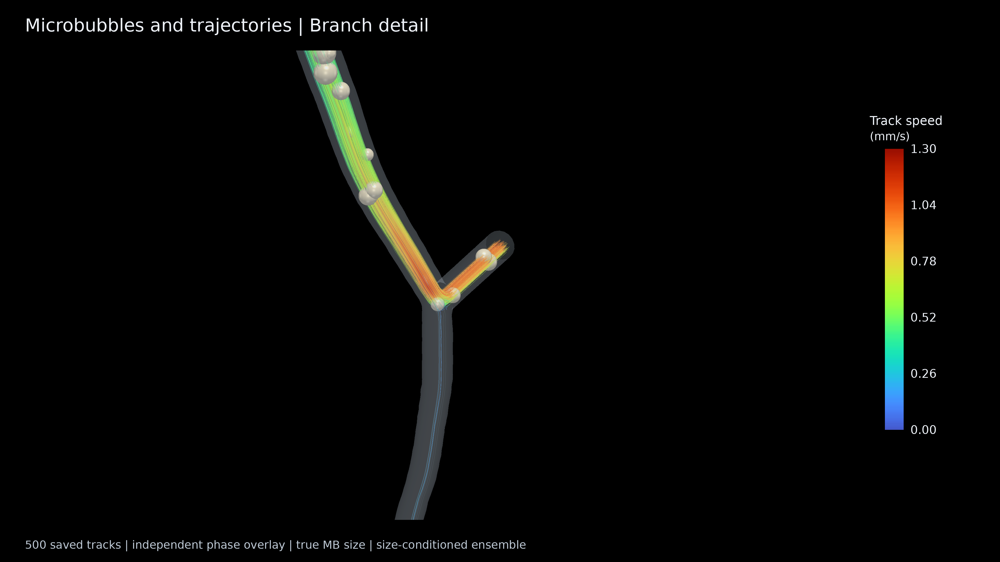
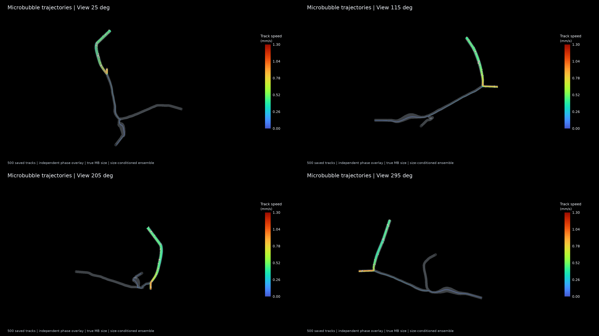
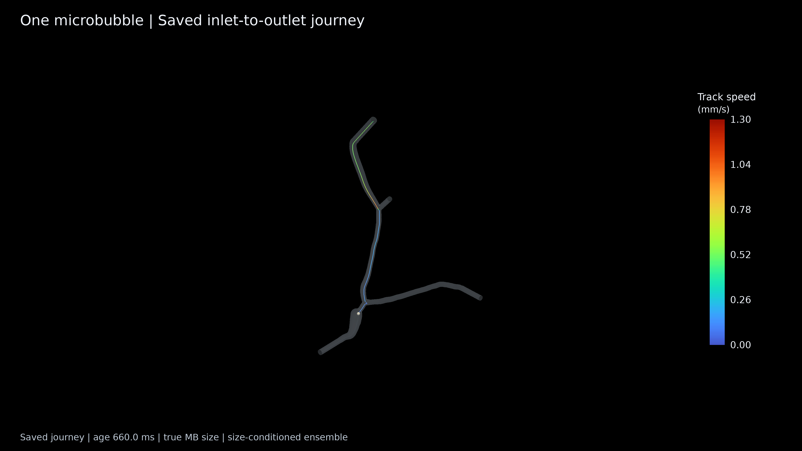
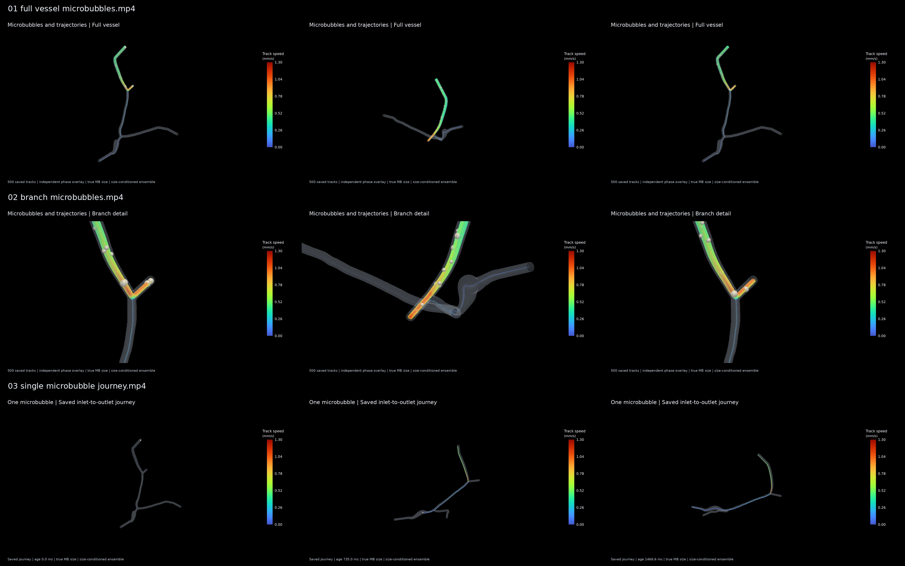

单方案 · 500 条独立轨迹 · 黑底展示素材
下载 6 页 PPT（内嵌视频）中文说明验证记录500 条轨迹 CSV
已到达出口 424 条；出口 01 / 02 / 03：0 / 421 / 3。其余为安全停止或时间上限。
固定入口位置、条件化粒径接纳；背景为原冻结流场（入口均速 0.353 mm/s）。前两段活动球为独立轨迹错时叠加，第三段为单条实际路径年龄回放。颜色为微泡速度，球保持真实半径。




